Sepal.Length Sepal.Width Petal.Length Petal.Width
Min. :4.300 Min. :2.000 Min. :1.000 Min. :0.100
1st Qu.:5.100 1st Qu.:2.800 1st Qu.:1.600 1st Qu.:0.300
Median :5.800 Median :3.000 Median :4.350 Median :1.300
Mean :5.843 Mean :3.057 Mean :3.758 Mean :1.199
3rd Qu.:6.400 3rd Qu.:3.300 3rd Qu.:5.100 3rd Qu.:1.800
Max. :7.900 Max. :4.400 Max. :6.900 Max. :2.500
Species
setosa :50
versicolor:50
virginica :50
Using R with biological datasets 2026
Daniel Brewer
Tidyverse and data exploration
Structuring data
Spreadsheet example: 
Follow these rules
- The first row of the data must be the names of the data columns.
- All other rows must be the data, and nothing else.
- You cannot use empty rows or empty columns as visual aids to look at the data.
- Do not use colour or other formatting to indicate information.
- The spreadsheet must not contain any summary cells.
Tidy tables
There are three interrelated rules that make a dataset tidy:
- Each variable is a column; each column is a variable.
- Each observation is a row; each row is an observation.
- Each value is a cell; each cell is a single value.

Why ensure that your data is tidy?
There are two main advantages:
- There’s a general advantage to picking one consistent way of storing data. If you have a consistent data structure, it’s easier to learn the tools that work with it because they have an underlying uniformity.
- There’s a specific advantage to placing variables in columns because it allows R’s vectorized nature to shine. That makes transforming tidy data feel particularly natural.
Example
Untidy table
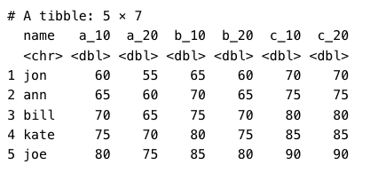
Tidy table
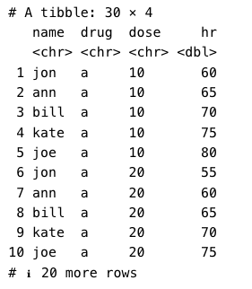
Exploratory Data Analysis (EDA)
Exploratory data analysis is an approach of analysing data sets to summarise their main characteristics. It is the first thing you should do with any data set you have access to, and R has a few functions to make this easier.
The Iris data set
- 50 samples from each of three species of Iris
- Iris setosa
- Iris virginica
- Iris versicolor
- Four features were measured from each sample: the length and the width of the sepals and petals, in centimeters.
summary()
When summary() is applied to a data frame it produce some simple summary statistics of all the columns.
glimpse()
glimpse() provides a peak at your data. For each column, it provides the type of variable and the first few values. It is in an easy to read format for even large data frames with each row being a different column.
Rows: 150
Columns: 5
$ Sepal.Length <dbl> 5.1, 4.9, 4.7, 4.6, 5.0, 5.4, 4.6, 5.0, 4.4, 4.9, 5.4, 4.…
$ Sepal.Width <dbl> 3.5, 3.0, 3.2, 3.1, 3.6, 3.9, 3.4, 3.4, 2.9, 3.1, 3.7, 3.…
$ Petal.Length <dbl> 1.4, 1.4, 1.3, 1.5, 1.4, 1.7, 1.4, 1.5, 1.4, 1.5, 1.5, 1.…
$ Petal.Width <dbl> 0.2, 0.2, 0.2, 0.2, 0.2, 0.4, 0.3, 0.2, 0.2, 0.1, 0.2, 0.…
$ Species <fct> setosa, setosa, setosa, setosa, setosa, setosa, setosa, s…skimr
skimr provides a frictionless approach to summary statistics which conforms to the principle of least surprise, displaying summary statistics the user can skim quickly to understand their data.
- Provides a larger set of statistics than
summary(), including missing, complete, n, and sd. - reports each data types separately
- handles dates, logicals, and a variety of other types
- supports console text graphs
| Name | iris |
| Number of rows | 150 |
| Number of columns | 5 |
| _______________________ | |
| Column type frequency: | |
| factor | 1 |
| numeric | 4 |
| ________________________ | |
| Group variables | None |
Variable type: factor
| skim_variable | n_missing | complete_rate | ordered | n_unique | top_counts |
|---|---|---|---|---|---|
| Species | 0 | 1 | FALSE | 3 | set: 50, ver: 50, vir: 50 |
Variable type: numeric
| skim_variable | n_missing | complete_rate | mean | sd | p0 | p25 | p50 | p75 | p100 | hist |
|---|---|---|---|---|---|---|---|---|---|---|
| Sepal.Length | 0 | 1 | 5.84 | 0.83 | 4.3 | 5.1 | 5.80 | 6.4 | 7.9 | ▆▇▇▅▂ |
| Sepal.Width | 0 | 1 | 3.06 | 0.44 | 2.0 | 2.8 | 3.00 | 3.3 | 4.4 | ▁▆▇▂▁ |
| Petal.Length | 0 | 1 | 3.76 | 1.77 | 1.0 | 1.6 | 4.35 | 5.1 | 6.9 | ▇▁▆▇▂ |
| Petal.Width | 0 | 1 | 1.20 | 0.76 | 0.1 | 0.3 | 1.30 | 1.8 | 2.5 | ▇▁▇▅▃ |
Exercise Answers 1
species island bill_length_mm bill_depth_mm
Adelie :152 Biscoe :168 Min. :32.10 Min. :13.10
Chinstrap: 68 Dream :124 1st Qu.:39.23 1st Qu.:15.60
Gentoo :124 Torgersen: 52 Median :44.45 Median :17.30
Mean :43.92 Mean :17.15
3rd Qu.:48.50 3rd Qu.:18.70
Max. :59.60 Max. :21.50
NA's :2 NA's :2
flipper_length_mm body_mass_g sex year
Min. :172.0 Min. :2700 female:165 Min. :2007
1st Qu.:190.0 1st Qu.:3550 male :168 1st Qu.:2007
Median :197.0 Median :4050 NA's : 11 Median :2008
Mean :200.9 Mean :4202 Mean :2008
3rd Qu.:213.0 3rd Qu.:4750 3rd Qu.:2009
Max. :231.0 Max. :6300 Max. :2009
NA's :2 NA's :2 Exercise Answers 2
Rows: 344
Columns: 8
$ species <fct> Adelie, Adelie, Adelie, Adelie, Adelie, Adelie, Adel…
$ island <fct> Torgersen, Torgersen, Torgersen, Torgersen, Torgerse…
$ bill_length_mm <dbl> 39.1, 39.5, 40.3, NA, 36.7, 39.3, 38.9, 39.2, 34.1, …
$ bill_depth_mm <dbl> 18.7, 17.4, 18.0, NA, 19.3, 20.6, 17.8, 19.6, 18.1, …
$ flipper_length_mm <int> 181, 186, 195, NA, 193, 190, 181, 195, 193, 190, 186…
$ body_mass_g <int> 3750, 3800, 3250, NA, 3450, 3650, 3625, 4675, 3475, …
$ sex <fct> male, female, female, NA, female, male, female, male…
$ year <int> 2007, 2007, 2007, 2007, 2007, 2007, 2007, 2007, 2007…Exercise Answers 3
| Name | penguins |
| Number of rows | 344 |
| Number of columns | 8 |
| _______________________ | |
| Column type frequency: | |
| factor | 3 |
| numeric | 5 |
| ________________________ | |
| Group variables | None |
Variable type: factor
| skim_variable | n_missing | complete_rate | ordered | n_unique | top_counts |
|---|---|---|---|---|---|
| species | 0 | 1.00 | FALSE | 3 | Ade: 152, Gen: 124, Chi: 68 |
| island | 0 | 1.00 | FALSE | 3 | Bis: 168, Dre: 124, Tor: 52 |
| sex | 11 | 0.97 | FALSE | 2 | mal: 168, fem: 165 |
Variable type: numeric
| skim_variable | n_missing | complete_rate | mean | sd | p0 | p25 | p50 | p75 | p100 | hist |
|---|---|---|---|---|---|---|---|---|---|---|
| bill_length_mm | 2 | 0.99 | 43.92 | 5.46 | 32.1 | 39.23 | 44.45 | 48.5 | 59.6 | ▃▇▇▆▁ |
| bill_depth_mm | 2 | 0.99 | 17.15 | 1.97 | 13.1 | 15.60 | 17.30 | 18.7 | 21.5 | ▅▅▇▇▂ |
| flipper_length_mm | 2 | 0.99 | 200.92 | 14.06 | 172.0 | 190.00 | 197.00 | 213.0 | 231.0 | ▂▇▃▅▂ |
| body_mass_g | 2 | 0.99 | 4201.75 | 801.95 | 2700.0 | 3550.00 | 4050.00 | 4750.0 | 6300.0 | ▃▇▆▃▂ |
| year | 0 | 1.00 | 2008.03 | 0.82 | 2007.0 | 2007.00 | 2008.00 | 2009.0 | 2009.0 | ▇▁▇▁▇ |
Data Manipulation with dplyr
The dplyr package gives you a handful of useful verbs for managing data. What they have in common:
- The first argument is always a data frame.
- The subsequent arguments typically describe which columns to operate on using the variable names (without quotes).
- The output is always a new data frame.
Brauer et al. (2008) dataset
Rows: 198,430
Columns: 7
$ symbol <chr> "SFB2", NA, "QRI7", "CFT2", "SSO2", "PSP2", "RIB2", "V…
$ systematic_name <chr> "YNL049C", "YNL095C", "YDL104C", "YLR115W", "YMR183C",…
$ nutrient <chr> "Glucose", "Glucose", "Glucose", "Glucose", "Glucose",…
$ rate <dbl> 0.05, 0.05, 0.05, 0.05, 0.05, 0.05, 0.05, 0.05, 0.05, …
$ expression <dbl> -0.24, 0.28, -0.02, -0.33, 0.05, -0.69, -0.55, -0.75, …
$ bp <chr> "ER to Golgi transport", "biological process unknown",…
$ mf <chr> "molecular function unknown", "molecular function unkn…filter()
If you want to filter rows of the data where some condition is true, use the filter() function.
- The first argument is the data frame you want to filter, e.g.
filter(mydata, .... - The second argument is a condition you must satisfy, e.g.
filter(ydat, symbol == "LEU1").
Conditions
==: Equal to!=: Not equal to>,>=: Greater than, greater than or equal to<,<=: Less than, less than or equal to
“and” operator & - satisfy all of multiple conditions.
“or” operator | - meet any of the multiple conditions.
filter() example 1
# A tibble: 36 × 7
symbol systematic_name nutrient rate expression bp mf
<chr> <chr> <chr> <dbl> <dbl> <chr> <chr>
1 LEU1 YGL009C Glucose 0.05 -1.12 leucine biosynthesis 3-isop…
2 LEU1 YGL009C Glucose 0.1 -0.77 leucine biosynthesis 3-isop…
3 LEU1 YGL009C Glucose 0.15 -0.67 leucine biosynthesis 3-isop…
4 LEU1 YGL009C Glucose 0.2 -0.59 leucine biosynthesis 3-isop…
5 LEU1 YGL009C Glucose 0.25 -0.2 leucine biosynthesis 3-isop…
6 LEU1 YGL009C Glucose 0.3 0.03 leucine biosynthesis 3-isop…
7 LEU1 YGL009C Ammonia 0.05 -0.76 leucine biosynthesis 3-isop…
8 LEU1 YGL009C Ammonia 0.1 -1.17 leucine biosynthesis 3-isop…
9 LEU1 YGL009C Ammonia 0.15 -1.2 leucine biosynthesis 3-isop…
10 LEU1 YGL009C Ammonia 0.2 -1.02 leucine biosynthesis 3-isop…
# ℹ 26 more rowsfilter() example 2
# A tibble: 72 × 7
symbol systematic_name nutrient rate expression bp mf
<chr> <chr> <chr> <dbl> <dbl> <chr> <chr>
1 LEU1 YGL009C Glucose 0.05 -1.12 leucine biosynthesis 3-isop…
2 ADH2 YMR303C Glucose 0.05 6.28 fermentation* alcoho…
3 LEU1 YGL009C Glucose 0.1 -0.77 leucine biosynthesis 3-isop…
4 ADH2 YMR303C Glucose 0.1 5.81 fermentation* alcoho…
5 LEU1 YGL009C Glucose 0.15 -0.67 leucine biosynthesis 3-isop…
6 ADH2 YMR303C Glucose 0.15 5.64 fermentation* alcoho…
7 LEU1 YGL009C Glucose 0.2 -0.59 leucine biosynthesis 3-isop…
8 ADH2 YMR303C Glucose 0.2 5.1 fermentation* alcoho…
9 LEU1 YGL009C Glucose 0.25 -0.2 leucine biosynthesis 3-isop…
10 ADH2 YMR303C Glucose 0.25 1.89 fermentation* alcoho…
# ℹ 62 more rowsfilter() example 3
# A tibble: 6 × 7
symbol systematic_name nutrient rate expression bp mf
<chr> <chr> <chr> <dbl> <dbl> <chr> <chr>
1 LEU1 YGL009C Glucose 0.05 -1.12 leucine biosynthesis 3-isop…
2 LEU1 YGL009C Ammonia 0.05 -0.76 leucine biosynthesis 3-isop…
3 LEU1 YGL009C Phosphate 0.05 -0.81 leucine biosynthesis 3-isop…
4 LEU1 YGL009C Sulfate 0.05 -1.57 leucine biosynthesis 3-isop…
5 LEU1 YGL009C Leucine 0.05 3.84 leucine biosynthesis 3-isop…
6 LEU1 YGL009C Uracil 0.05 -2.07 leucine biosynthesis 3-isop…arrange()
- The
arrange()function takes a data frame and arranges (or sorts) by column(s) of interest. - The first argument is the data, and subsequent arguments are columns to sort on.
- Use the
desc()function to arrange by descending.
arrange() example 1
# A tibble: 198,430 × 7
symbol systematic_name nutrient rate expression bp mf
<chr> <chr> <chr> <dbl> <dbl> <chr> <chr>
1 SUL1 YBR294W Phosphate 0.05 -6.5 sulfate transport sulf…
2 SUL1 YBR294W Phosphate 0.1 -6.34 sulfate transport sulf…
3 ADH2 YMR303C Phosphate 0.1 -6.15 fermentation* alco…
4 ADH2 YMR303C Phosphate 0.3 -6.04 fermentation* alco…
5 ADH2 YMR303C Phosphate 0.25 -5.89 fermentation* alco…
6 SUL1 YBR294W Uracil 0.05 -5.55 sulfate transport sulf…
7 SFC1 YJR095W Phosphate 0.2 -5.52 fumarate transport* succ…
8 JEN1 YKL217W Phosphate 0.3 -5.44 lactate transport lact…
9 MHT1 YLL062C Phosphate 0.05 -5.36 sulfur amino acid me… homo…
10 SFC1 YJR095W Phosphate 0.25 -5.35 fumarate transport* succ…
# ℹ 198,420 more rowsarrange() example 2
# A tibble: 198,430 × 7
symbol systematic_name nutrient rate expression bp mf
<chr> <chr> <chr> <dbl> <dbl> <chr> <chr>
1 GAP1 YKR039W Ammonia 0.05 6.64 amino acid transport* L-pr…
2 DAL5 YJR152W Ammonia 0.05 6.64 allantoate transport alla…
3 GAP1 YKR039W Ammonia 0.1 6.64 amino acid transport* L-pr…
4 DAL5 YJR152W Ammonia 0.1 6.64 allantoate transport alla…
5 DAL5 YJR152W Ammonia 0.15 6.64 allantoate transport alla…
6 DAL5 YJR152W Ammonia 0.2 6.64 allantoate transport alla…
7 DAL5 YJR152W Ammonia 0.25 6.64 allantoate transport alla…
8 DAL5 YJR152W Ammonia 0.3 6.64 allantoate transport alla…
9 GIT1 YCR098C Phosphate 0.05 6.64 glycerophosphodieste… glyc…
10 PHM6 YDR281C Phosphate 0.05 6.64 biological process u… mole…
# ℹ 198,420 more rowsExercise Answer 1
# A tibble: 24 × 7
symbol systematic_name nutrient rate expression bp mf
<chr> <chr> <chr> <dbl> <dbl> <chr> <chr>
1 LEU9 YOR108W Leucine 0.05 0.44 leucine biosynthesis 2-isop…
2 LEU1 YGL009C Leucine 0.05 3.84 leucine biosynthesis 3-isop…
3 LEU2 YCL018W Leucine 0.05 1.54 leucine biosynthesis 3-isop…
4 LEU4 YNL104C Leucine 0.05 1.94 leucine biosynthesis 2-isop…
5 LEU9 YOR108W Leucine 0.1 0.57 leucine biosynthesis 2-isop…
6 LEU1 YGL009C Leucine 0.1 3.36 leucine biosynthesis 3-isop…
7 LEU2 YCL018W Leucine 0.1 1.23 leucine biosynthesis 3-isop…
8 LEU4 YNL104C Leucine 0.1 1.71 leucine biosynthesis 2-isop…
9 LEU9 YOR108W Leucine 0.15 0.46 leucine biosynthesis 2-isop…
10 LEU1 YGL009C Leucine 0.15 3.24 leucine biosynthesis 3-isop…
# ℹ 14 more rowsExercise Answer 2
# A tibble: 24 × 7
symbol systematic_name nutrient rate expression bp mf
<chr> <chr> <chr> <dbl> <dbl> <chr> <chr>
1 LEU1 YGL009C Leucine 0.05 3.84 leucine biosynthesis 3-isop…
2 LEU1 YGL009C Leucine 0.1 3.36 leucine biosynthesis 3-isop…
3 LEU1 YGL009C Leucine 0.15 3.24 leucine biosynthesis 3-isop…
4 LEU1 YGL009C Leucine 0.2 2.84 leucine biosynthesis 3-isop…
5 LEU1 YGL009C Leucine 0.25 2.04 leucine biosynthesis 3-isop…
6 LEU1 YGL009C Leucine 0.3 0.87 leucine biosynthesis 3-isop…
7 LEU2 YCL018W Leucine 0.05 1.54 leucine biosynthesis 3-isop…
8 LEU2 YCL018W Leucine 0.1 1.23 leucine biosynthesis 3-isop…
9 LEU2 YCL018W Leucine 0.15 0.69 leucine biosynthesis 3-isop…
10 LEU2 YCL018W Leucine 0.2 0.39 leucine biosynthesis 3-isop…
# ℹ 14 more rowsselect()
- The
select()function returns only certain columns. - The first argument is the data, and subsequent arguments are the columns you want.

select() example 1
# A tibble: 198,430 × 2
symbol systematic_name
<chr> <chr>
1 SFB2 YNL049C
2 <NA> YNL095C
3 QRI7 YDL104C
4 CFT2 YLR115W
5 SSO2 YMR183C
6 PSP2 YML017W
7 RIB2 YOL066C
8 VMA13 YPR036W
9 EDC3 YEL015W
10 VPS5 YOR069W
# ℹ 198,420 more rowsselect() example 2
# A tibble: 198,430 × 5
symbol systematic_name nutrient rate expression
<chr> <chr> <chr> <dbl> <dbl>
1 SFB2 YNL049C Glucose 0.05 -0.24
2 <NA> YNL095C Glucose 0.05 0.28
3 QRI7 YDL104C Glucose 0.05 -0.02
4 CFT2 YLR115W Glucose 0.05 -0.33
5 SSO2 YMR183C Glucose 0.05 0.05
6 PSP2 YML017W Glucose 0.05 -0.69
7 RIB2 YOL066C Glucose 0.05 -0.55
8 VMA13 YPR036W Glucose 0.05 -0.75
9 EDC3 YEL015W Glucose 0.05 -0.24
10 VPS5 YOR069W Glucose 0.05 -0.16
# ℹ 198,420 more rowsselect() example 3
These functions do not change the original data. You need to assign the results to another variable if you want to keep them.
# A tibble: 198,430 × 5
symbol systematic_name nutrient rate expression
<chr> <chr> <chr> <dbl> <dbl>
1 SFB2 YNL049C Glucose 0.05 -0.24
2 <NA> YNL095C Glucose 0.05 0.28
3 QRI7 YDL104C Glucose 0.05 -0.02
4 CFT2 YLR115W Glucose 0.05 -0.33
5 SSO2 YMR183C Glucose 0.05 0.05
6 PSP2 YML017W Glucose 0.05 -0.69
7 RIB2 YOL066C Glucose 0.05 -0.55
8 VMA13 YPR036W Glucose 0.05 -0.75
9 EDC3 YEL015W Glucose 0.05 -0.24
10 VPS5 YOR069W Glucose 0.05 -0.16
# ℹ 198,420 more rowsmutate()
The mutate() function adds new columns to the data based on other columns.
# A tibble: 198,430 × 7
symbol systematic_name nutrient rate expression signal sigsr
<chr> <chr> <chr> <dbl> <dbl> <dbl> <dbl>
1 SFB2 YNL049C Glucose 0.05 -0.24 0.847 0.920
2 <NA> YNL095C Glucose 0.05 0.28 1.21 1.10
3 QRI7 YDL104C Glucose 0.05 -0.02 0.986 0.993
4 CFT2 YLR115W Glucose 0.05 -0.33 0.796 0.892
5 SSO2 YMR183C Glucose 0.05 0.05 1.04 1.02
6 PSP2 YML017W Glucose 0.05 -0.69 0.620 0.787
7 RIB2 YOL066C Glucose 0.05 -0.55 0.683 0.826
8 VMA13 YPR036W Glucose 0.05 -0.75 0.595 0.771
9 EDC3 YEL015W Glucose 0.05 -0.24 0.847 0.920
10 VPS5 YOR069W Glucose 0.05 -0.16 0.895 0.946
# ℹ 198,420 more rowsPipe |>
|> is super cool and lets you pipe the output of one function to the input of another, so you can avoid nesting functions.
With pipe
When there are multiple functions, it’s easy to skim because the verbs come at the start of each line.
For example:
Without pipe
Start with the flights data, then filter, then mutate, then select, then arrange. Compare with:
Exercise answer 1
Exercise answer 2
# A tibble: 5,517 × 4
symbol expression mf bp
<chr> <dbl> <chr> <chr>
1 ADH2 6.28 alcohol dehydrogenase activity fermentation*
2 HSP26 5.86 unfolded protein binding response to stre…
3 MLS1 5.64 malate synthase activity glyoxylate cycle
4 HXT5 5.56 glucose transporter activity* hexose transport
5 CTA1 5.04 catalase activity oxygen and react…
6 SFC1 5.03 succinate:fumarate antiporter activity fumarate transpo…
7 ICL1 4.93 isocitrate lyase activity glyoxylate cycle
8 <NA> 4.89 <NA> <NA>
9 POT1 4.75 acetyl-CoA C-acyltransferase activity fatty acid beta-…
10 ARO9 4.68 aromatic-amino-acid transaminase activity aromatic amino a…
# ℹ 5,507 more rowsData cleaning extra functions
rename()- changes the names of individual variables usingnew_name = old_namesyntax .drop_na(col)- detects whether there is a missing value.drop_na()- removes any rows of a data frame that contain an NA in any column.distinct(cols, .keep_all = TRUE)- Keep only unique/distinct rows from a data frame.
Manipulating Groups
Split-apply-combine is a very common data analysis pattern.
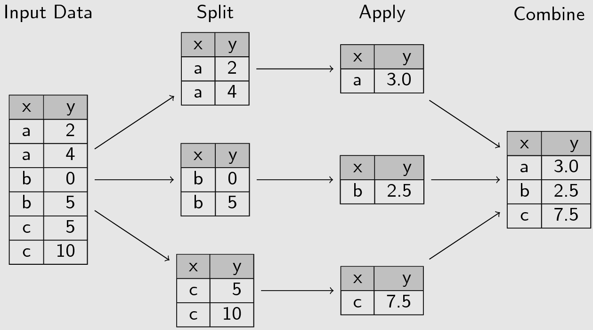
Manipulating Groups in R
This pattern is performed in R using dplyr’s group_by and summarise() functions.
data |>
group_by(col1) |>
summarise(mean_col2 = mean(col2))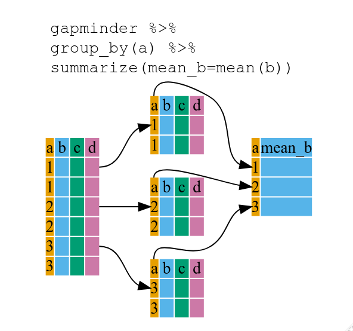
Exercise Answer 1
# A tibble: 6 × 2
nutrient mean_expr
<chr> <dbl>
1 Ammonia 0.943
2 Glucose 0.743
3 Leucine 0.811
4 Phosphate 0.981
5 Sulfate 0.743
6 Uracil 0.731Exercise Answer 2
Statistics basics
GGplot2 reminder
ggplot2 is built on the grammar of graphics, the idea that any plot can be built from the same set of components: a data set, mapping aesthetics, and graphical layers:
- Data sets are the data that you, the user, provide.
- Mapping aesthetics are what connect the data to the graphics.
- Layers are the actual graphical output from ggplot2.
ggplot2 example
ggplot2 example
ggplot2 example
Descriptive statistics of a single variable
- Descriptive statistics refers to the act of describing and summarising data.
- This can be done using tables, plots, charts and key descriptive values such as the size of the dataset, percentages, average values and measures of spread.
- A lot of the descriptive statistics can be gained quickly using the Exploratory Data Analysis functions i.e.
summary()andskim().
Descriptive statistics - Continuous variables
mean(x)- The arithmetic mean of the values in x is computed.sd(x)- computes the standard deviation of the values in x.median(x)- computes the median average of the values in x.IQR(x)- calculates the interquartile range of the values in x.
Descriptive statistics - Continuous variables - Example
Descriptive statistics - Continuous variables - Plot
Descriptive statistics - Categorical variables i.e. factors
For categorical variables you would summarise by counting the number in each category.
Descriptive statistics - Categorical variables i.e. factors
This can be visualised using a barplot.
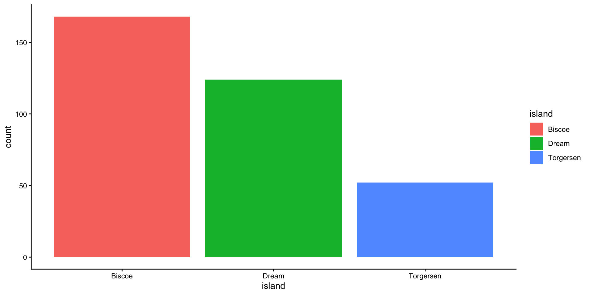
Exercise Answer 1
Exercise Answer 2
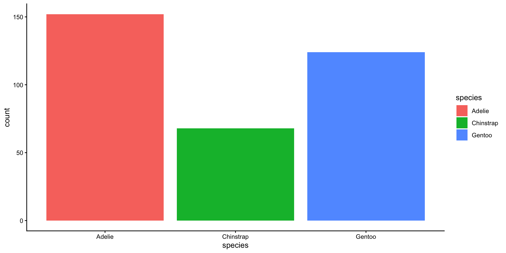
Exercise Answer 3
Exercise Answer 4
Exercise Answer 5
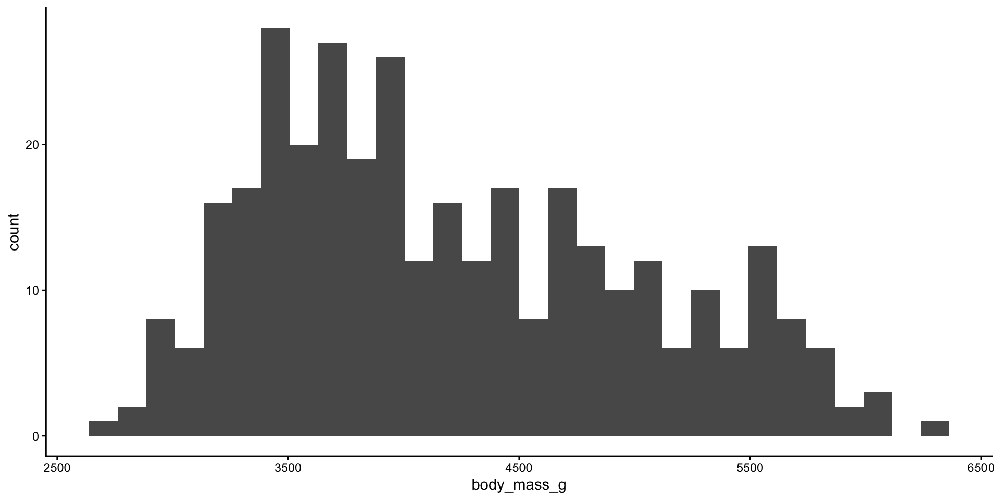
For a continuous variable are the average values of two groups different?
One of the most common questions that researchers ask is, “Do we have evidence that the average value of a trait in one group differs from the average for another group?”.
t-tests
This is the most commonly used approach.
Assumptions
- The data are continuous.
- The sample data have been randomly sampled from a population.
- The distribution is approximately normal.
t-test Example
Welch Two Sample t-test
data: bill_depth_mm by species
t = 25.337, df = 271.98, p-value < 2.2e-16
alternative hypothesis: true difference in means between group Adelie and group Gentoo is not equal to 0
95 percent confidence interval:
3.102837 3.625651
sample estimates:
mean in group Adelie mean in group Gentoo
18.34636 14.98211 [1] 1.505948e-73t-test Example

t-test Example

Testing the distribution is approximately normal - histogram
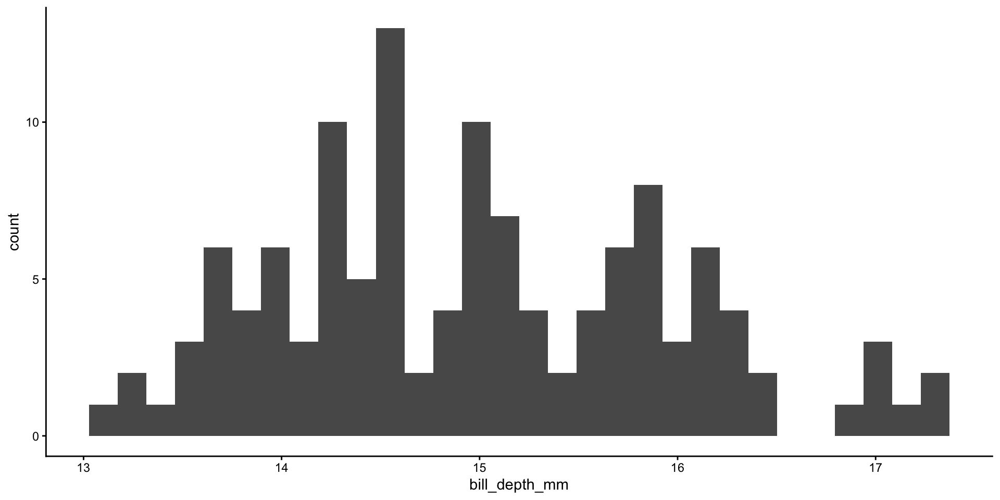
Testing the distribution is approximately normal - QQ plot
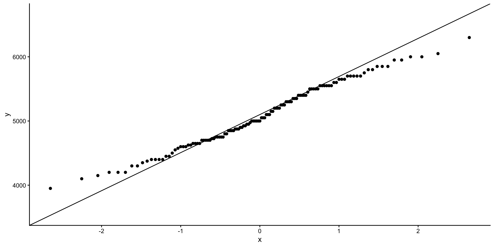
Testing the distribution is approximately normal - Shapiro-Wilk test
Mann-Whitney U test
What do you do if the distribution of values doesn’t follow a normal distribution?
- Transform the data so it is normally distributed e.g. \(log\) transformation.
- You use a non-parametric tests i.e. a statistical methods that don’t assume a specific distribution for the data.
The Mann-Whitney U Test, also known as the Wilcoxon Rank Sum Test, is a non-parametric statistical test used to compare the medians of two groups.
Mann-Whitney U Test Example
Mann-Whitney U Test Example Plot
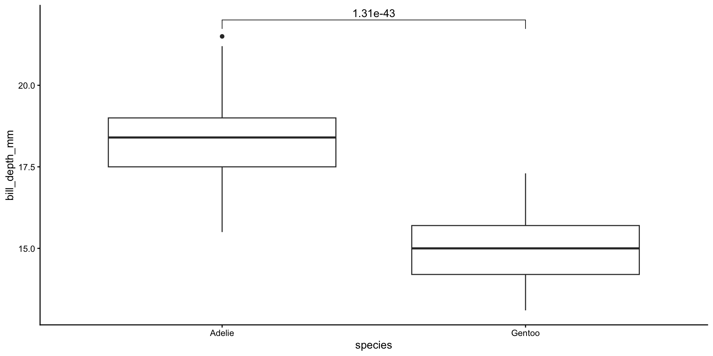
Exercise Answers
Welch Two Sample t-test
data: Arcanobacterium by primaryCat
t = 2.9236, df = 9.2518, p-value = 0.01646
alternative hypothesis: true difference in means between group CB and group H is not equal to 0
95 percent confidence interval:
0.01898677 0.14652369
sample estimates:
mean in group CB mean in group H
0.089785876 0.007030646 Exercise Answers
Exercise Answers
Exercise Answers
Wilcoxon rank sum test with continuity correction
data: Arcanobacterium by primaryCat
W = 55, p-value = 0.04862
alternative hypothesis: true location shift is not equal to 0Exercise Answers
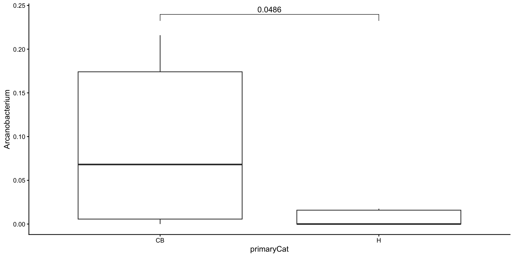
t-test Variations
Variations that we will not discuss today:
- Comparing a distribution to a fixed-value - One-sample statistical test
- Comparing groups when you know the direction i.e. is x larger than y, one-tailed test as compared to the normal two-tailed test.
- When measurements are linked in some way e.g. two qPCRs for different probes on the same set of samples i.e. a paired statistical test
Multiple “probes” at the same time
The real power of R comes when you need to do statistical tests on a large number of times e.g. for every genus detected. Here is an example:
Multiple “probes” at the same time
# A tibble: 133 × 10
name .y. group1 group2 n1 n2 statistic df p p.adj
<chr> <chr> <chr> <chr> <int> <int> <dbl> <dbl> <dbl> <dbl>
1 D_5__Arcanobact… value CB H 10 7 2.92 9.25 0.0165 0.520
2 D_5__Undibacter… value CB H 10 7 1.90 10.7 0.0846 0.520
3 D_5__S5-A14a value CB H 10 7 1.79 9.11 0.106 0.520
4 D_4__Family XI;… value CB H 10 7 1.76 10.9 0.107 0.520
5 D_5__Sutterella value CB H 10 7 1.63 9.41 0.137 0.520
6 D_5__Ralstonia value CB H 10 7 1.55 11.4 0.149 0.520
7 D_5__Fastidiosi… value CB H 10 7 1.45 13.9 0.169 0.520
8 D_5__Allorhizob… value CB H 10 7 1.49 9 0.172 0.520
9 D_5__Howardella value CB H 10 7 -1.54 6 0.175 0.520
10 D_4__Ruminococc… value CB H 10 7 1.47 9 0.177 0.520
# ℹ 123 more rowsAre there differences in the means of three or more groups?
- The main statistical test to do this is the One-way ANOVA (analysis of variance).
- Post-hoc tests such as Tukey Honest Significant Differences, or a multiple-testing corrected set of pairwise t-tests.
- Look at Kruskal-Wallis test for a non-parametric alternative
Example - ANOVA
Example - Post-hoc tests
Tukey multiple comparisons of means
95% family-wise confidence level
Fit: aov(formula = bill_depth_mm ~ species, data = penguins)
$species
diff lwr upr p adj
Chinstrap-Adelie 0.07423062 -0.3110995 0.4595607 0.8928875
Gentoo-Adelie -3.36424379 -3.6847143 -3.0437733 0.0000000
Gentoo-Chinstrap -3.43847441 -3.8371903 -3.0397586 0.0000000Example - Plot
Exercise Answers
Df Sum Sq Mean Sq F value Pr(>F)
diet 2 84681 42341 19.51 1.82e-06 ***
Residuals 36 78114 2170
---
Signif. codes: 0 '***' 0.001 '**' 0.01 '*' 0.05 '.' 0.1 ' ' 1Exercise Answers
Exercise Answers
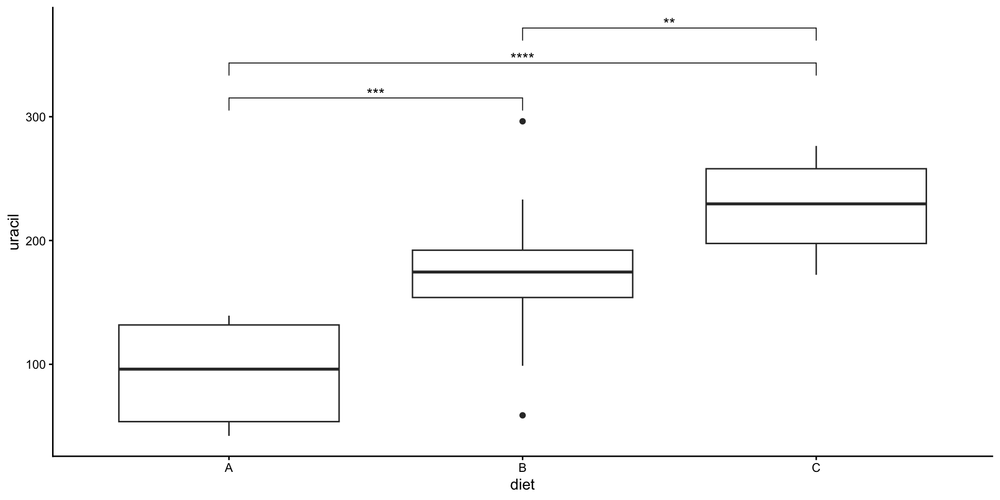
Is there a significant relationship between two continuous measurements?
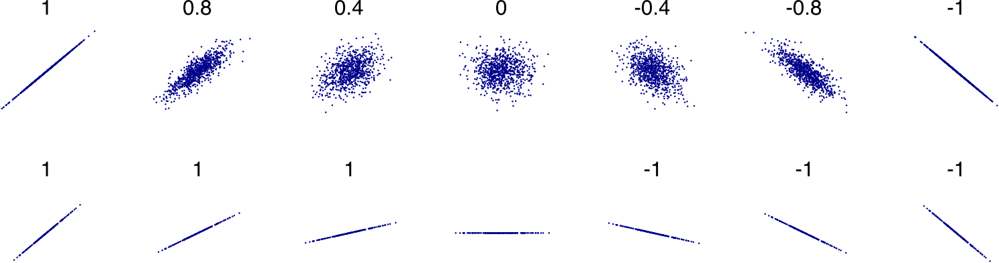
- Correlation Analysis discovers if there is a relationship between two sets of measurements and the strength.
- “Correlation is not causation”
Correlation types
- Pearson’s correlation coefficient. It is a measure of linear association and assesses how good a “line of best fit” is. The coefficient is often denoted by the letter \(r\).
- Spearman’s rank correlation coefficient. It is a rank correlation coefficients and measures the extent to which, as one variable increases, the other variable tends to increase, without requiring that increase to be represented by a linear relationship. The coefficient is often denoted by the Greek letter \(\rho\).
Correlation - Example
Pearson's product-moment correlation
data: penguins$flipper_length_mm and penguins$body_mass_g
t = 32.722, df = 340, p-value < 2.2e-16
alternative hypothesis: true correlation is not equal to 0
95 percent confidence interval:
0.843041 0.894599
sample estimates:
cor
0.8712018 Correlation - Example
Spearman's rank correlation rho
data: penguins$flipper_length_mm and penguins$body_mass_g
S = 1066875, p-value < 2.2e-16
alternative hypothesis: true rho is not equal to 0
sample estimates:
rho
0.8399741 Correlation - Plot
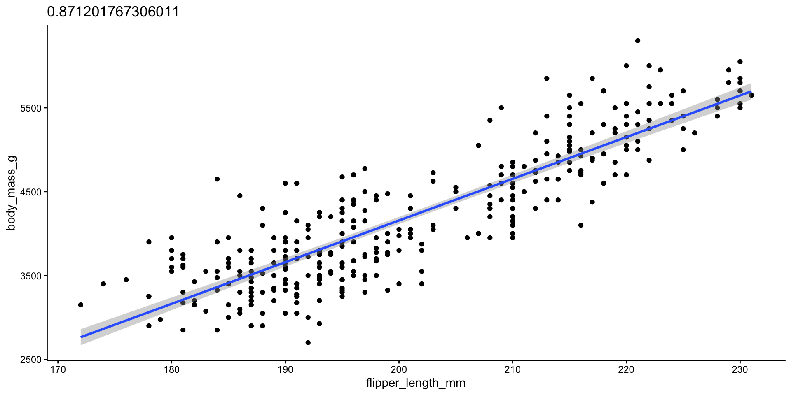
Exercise Answers
Pearson's product-moment correlation
data: cow_diet$uracil and cow_diet$xanthine
t = 7.6656, df = 37, p-value = 3.749e-09
alternative hypothesis: true correlation is not equal to 0
95 percent confidence interval:
0.6214104 0.8810902
sample estimates:
cor
0.7833412 Exercise Answers
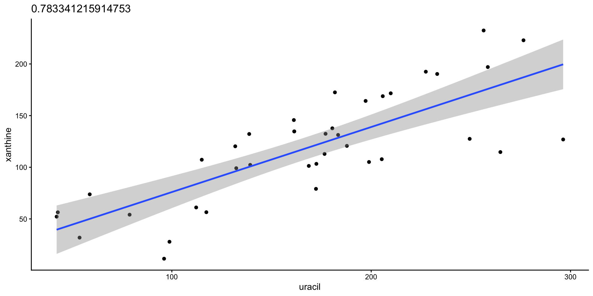
Is there a relationship between two categorical variables?
A contingency table, also known as a cross-tabulation or cross-tab, shows how the values of two or more categorical variables are distributed across their respective categories.
Chi-square test
Chi-Square Test of Independence helps determine whether two categorical variables are independent or if there’s a relationship between them. For example, you might want to know if gender affects voting preference. It takes a contingency table as input.
Assumptions:
- All observations are independent.
- Cells in the contingency table are mutually exclusive
- Expected value of cells should be 5 or greater in at least 80% of cells
Chi-square test example
Chi-square test proportion table
Chi-square test plot
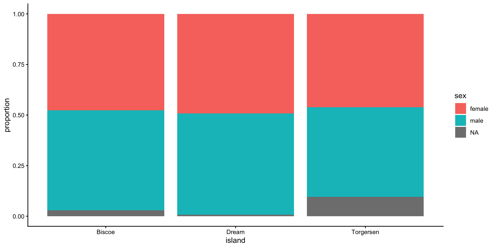
Exercise Answers
Exercise Answers
Exercise Answers
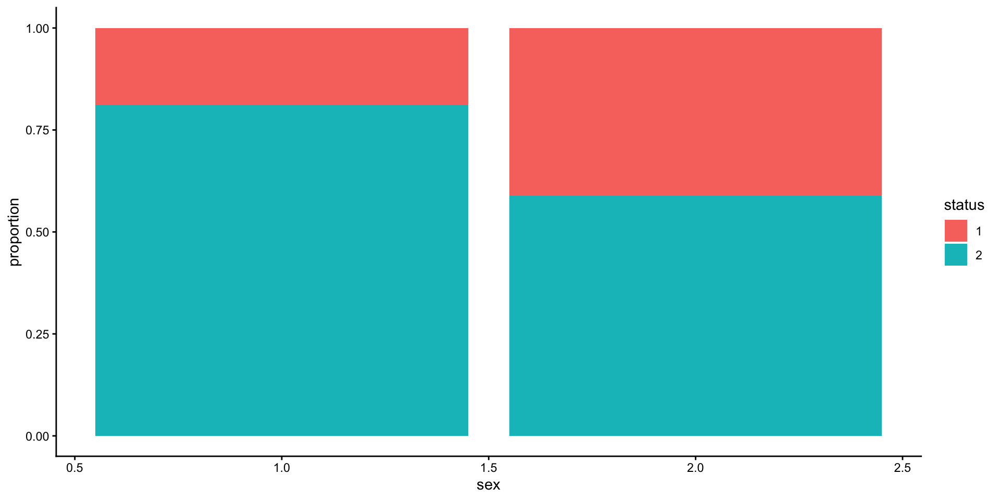
Time to event or survival analyses
Introduction to survival analysis
In this part we will look at some of the steps you need to go through to create a test using biomarkers to predict a clinical outcome using real data from our recent prostate cancer bacterial biomarker paper.
Kaplan-Meier plots
To create the Kaplan-Meier plot we will be using the ggsurvfit R package.
Kaplan-Meier plots example
Exercise Answers
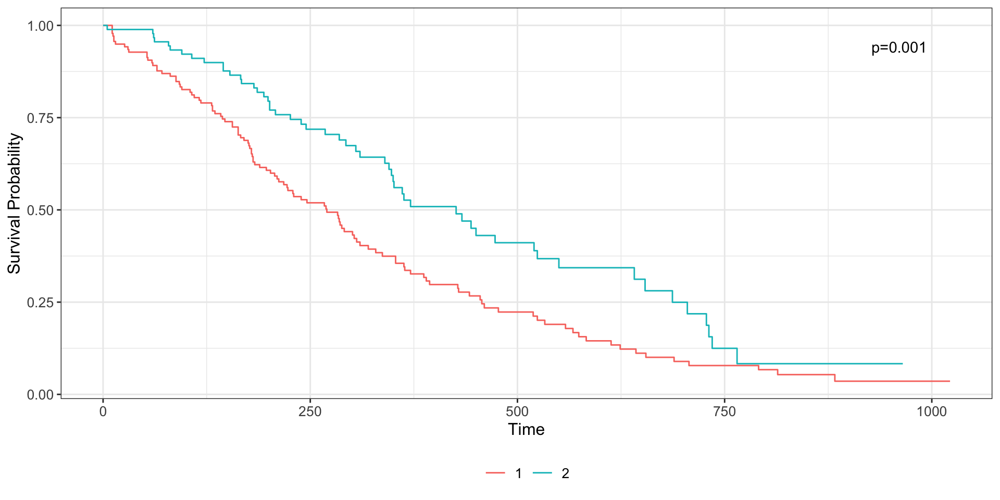
The Log-rank test
survdiff() tests for differences in survival between two or more groups using a log-rank test.
Exercise Answers
Cox regression
The need for the Cox Proportional Hazards Model due to Kaplan-Meier curves and log-rank tests are limited:
- Univariate only
- Categorical only
In most situations these limitations are not met.
- Cox regression is a linear regression model that can be thought of as a form of logistic regression where the time at which the event occurs is also taken into account.
The hazard function
The hazard function \(h(t)\) for an individual at time \(t\) is modeled as: \[h(t) = h_0(t) \exp( \beta_1 x_1 + \beta_2 x_2 + \dots + \beta_p x_p )\] Where:
- \(h(t)\) is the hazard function at time \(t\).
- \(h_0(t)\) is the baseline hazard function.
- \(\exp(\dots)\) denotes the exponential function.
- \(\beta_1, \beta_2, \dots, \beta_p\) are the regression coefficients for the predictors.
- \(x_1, x_2, \dots, x_p\) are the predictor variables (covariates) for an individual.
Proportional hazards assumption
\[ HR(t) = h_1(t)/h_0(t) = e^{\beta_1} \]
- \(HR(t) = 1\): No effect
- \(HR(t) < 1\): Reduction in the hazard (a good prognostic factor i.e. protective)
- \(HR(t) > 1\): Increase in hazard (a bad prognostic factor)
HR is the effect size.
Cox regression example
# A tibble: 1 × 7
term estimate std.error statistic p.value conf.low conf.high
<chr> <dbl> <dbl> <dbl> <dbl> <dbl> <dbl>
1 abbsTRUE 6.18 1.04 1.75 0.0797 0.806 47.3Hazard ratio = 6.2 (95% Confidence Interval 0.8-47.3), p = 0.08.
Exercise Answers
Exercise Answers
# A tibble: 7 × 7
term estimate std.error statistic p.value conf.low conf.high
<chr> <dbl> <dbl> <dbl> <dbl> <dbl> <dbl>
1 sex 0.576 0.201 -2.74 0.00609 0.389 0.855
2 age 1.01 0.0116 0.917 0.359 0.988 1.03
3 ph.ecog 2.08 0.223 3.29 0.00101 1.35 3.23
4 ph.karno 1.02 0.0112 2.00 0.0457 1.00 1.05
5 pat.karno 0.988 0.00805 -1.54 0.123 0.972 1.00
6 meal.cal 1.00 0.000259 0.128 0.898 1.000 1.00
7 wt.loss 0.986 0.00777 -1.84 0.0652 0.971 1.00